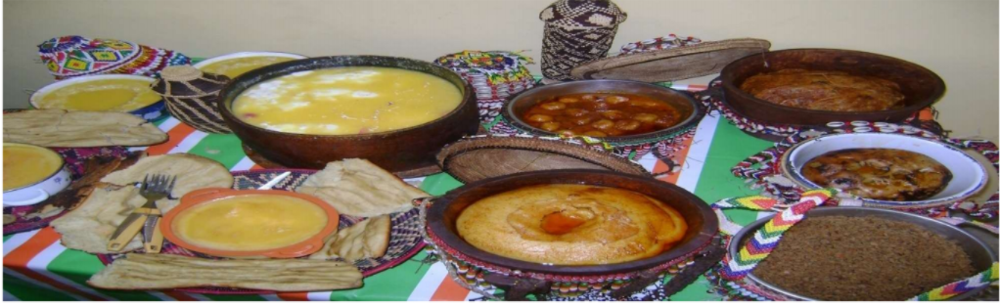

የአፋር ብሔረሰብ ምግብ አዘገጃጀት / አሠራር /
የአፋር ብሔረሰብ በስፋት የተሠማራው ከዶሮ እርባታ በስተቀር የቤ ƒ እንስሳትን በማርባት ነው፡፡ አጠቃላይ ህይወቱ የተመሠረተው የቀንድ
ከብቶች ፣ፍየል፣በግ፣ግመል T`uƒ ላይ ነው፡፡ የቤት እንስሳ ቸው 3⁄4 ምግብ፣ 3⁄4 ገንዘብ ፣3⁄4 ማህበራዊ ዋስትናእና 3⁄4 ማህበራዊ ማዕ[ግ /ደረጃ/
ÁÑ“ê÷†aM::
በገጠር የሚኖረው አርብቶ አደር ከጠቅላላው ህዝብ 86.4 ሲሆን 13.6 በከተማ የሚኖር ነው ፣ቢሆንም በከተማ የሚኖሩት ከገጠሩ ህይወት
ጋር ብዙም የተላቀቁ አይደሉም፣ ክልሉ አመቱን ሙሉ የዝናብ እጥረት ስለአለበት በእርሻ ላይ የተሰማሩት ቁጥር እጅግ በጣም ውሰን
“†ው በመሆኑም ህዝቡ ምግቡን የሚያዘጋጀው ከሚያረባቸው 3⁄4 ቤት እንስሳት አስተዋፅኦ ከሚገኘው ወተትና ስጋ ነው አሁን አሁን መስኖ
በመጠቀም የእህል WwKA‹” እጅግ በጣም አነስተኛ እየመረቱ፡፡
ከሌሎች አጎራባች ህብረተሰቦች ጋር ባላቸው ፍተኛ ግንኙነት የተነሣ የእህል ምርቶችን ይጠቀማሉ ብዙውን ጊዜ የሚጠቀሟቸው እህሎች
በቀሎ ፣ስንዴና፣ማሽላ፣ ናቸው፡፡
ምንም እንኳ የድንጋይ ጉልቻዎች ያሉት ምድጃ ቢጠቀሙም ዋናው እንደ ምድ Í ም መጋገሪያም የሚጠቀሙት ሙፌ
ነው፣ ሙፌ የሚባለው ትንሽ የመሬት ̈ጥ ጉድጓድ ተቆፍሮ ዙሪያው ግድግዳ ረዘም ረዘም ባሉ ጠፍጣፋ ድንጋዮች
የተሠራ ነው በዚህ
ጉድጓድ ውስጥ አንጨቶችን በማስገባት አሣት ይያያዛል፣ እንጨቱ ነዶነዶ ጪሱ ጠቅላላ ሲጠፋ ሁሉም ፍም ሲሆን ድንጋዮቹም በ ×ም ይግላሉ፣
በዚህን ወቅት ከጋለው የድንጋይ ግድግዳ ላይ አስፈላጊውን ነገር /ምግብ/ መጋገር ነው' Ÿ ፍሙም ላይ የሚጠብሱ ምግቦች ” ማስቀመጥና TwcM
ይችላል በብረት ድስት ውስጥ ያለን ነገር ከነብረት ድስቱ ከፍሙ ላይ በማስቀመጥ ማብሰል U ይቻላል ጉድጓዱ ውስጥ ምግቦች ከተቀመጡ በኃላ
ሙቀቱ እንዳይወጣና እንዳይበርድ በድንጋይ በኬ h ና ወይም በርጥብ ነገር በአፈር የጉድጓድ በ \ /አፍ/ ይከደናል፡፡
አሁን አሁን ደግሞ ጉድጓ Æ አፍ ላይ በቁራጭ ብረት ግድዳውን በማገናኘት ስጋውን አንጠልጥለው ይጠብሳሉ ሆኖም አከዳደኑ ያው በድንጋይ፣
በኬሻ፣ u ቅጠላቅጠልም በአፈር ሊሆንም ይችላል አልፎ አልፎ ብረት ምጣድ የሙፌን / የጉዳጓድ /አፍ በብረት ምጣድ ከድነው ፣ዙሪያውን በኬሽና
አፈር ይከድኑታል፡፡
ሙፌ /ገአሞ
ሙፌ /ገአሞ - ከበቀሎ የሚሠራ ምግብ ነው፡፡
በሎ ተነክሮ ድዶ /mududdo/ ይሉታል /ከተነከረበት አውጥቶ ይፈጫል፣ በትንሹ ተድቦልቡሎ ግምል /ምርቱ ይሉታል/ ይጋገራል እር
መሆኑ ነው፡፡ ይህን /ምርቱን/ ከዱቄት ጋር ደባልቆ በውሃ ይቀጠናል ወዲያው በመቀጠል እያዘጋጁ በሙፌው ውስጥ ባለው የድንጋይ ግድግዳ ላይ
መጋገር ነው፡፡ ይህም ናዲ ሙፌ ተብሎ ይጠራል፡፡ ወዲያው ዱቄቱ ተቦክቶ ወዲያው የሚጋገር ዳቦ ሲሆን የሚ uL ው በትኩስ
ወተት እየተማገ ነው ተፈርፍሮ አይበላም፡
ቡኤታ /Buuqeyta/
የተፈጨ በቀሎ ላይ ግምል /ምርቱ/ተጨምሮበት ለተወሰነ ጊዜ እንዲቦካ ይደረጋል ፣ከቦካ በኃላ ሙፌ መጋገር ነው፡፡ ዳቦውን በቅቤ በእርጎና
በበረበሬ እያማጉ መመገብ ነው፡፡
